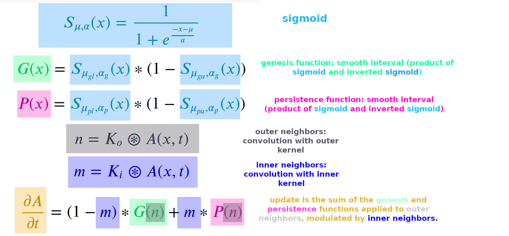

Non-Platonism with respect to temporal resolution (step size $\Delta t$) SmoothLife. download (mp4).
Unlike earlier continuous CA (CAPOW Rucker 1999; and MacLennan 1990) Rafler reported the appearance of a glider in SmoothLife (2011). However, gliders had been previously reported in 2009 in a reaction diffusion system: U-Skate World.
SmoothLife outer and inner neighborhood kernels, and the update function comprising genesis and persistence (analogous to B and S rules in Life).

SmoothLife fits directly into the Euler method. The SmoothLife update PDE is made up of smooth intervals (constructed from sigmoids), and separted into genesis and persistence (analogous to B and S in Life). The contribution of the genesis/persistence functions at any given point depends on the inner neighborhood value.
Rafler, S. (2011). Generalization of Conway's "Game of Life" to a continuous domain - SmoothLife. arXiv: Cellular Automata and Lattice Gases. arxiv:1111.1567
Note that my implementation of SmoothLife is based on the continuous time version mentioned in Rafler 2011, ported to the glaberish framework: Davis, Q.T., & Bongard, J.C. (2022). Glaberish: Generalizing the Continuously-Valued Lenia Framework to Arbitrary Life-Like Cellular Automata. The 2022 Conference on Artificial Life. doi:10.1162/isal_a_00530, arxiv:2205.10463
MacLennan, Bruce J.. "Continuous Spatial Automata." (1990). pdf.
Rucker, Rudy. "Continuous-Valued Cellular Automata in Two Dimensions." (1999). pdf.